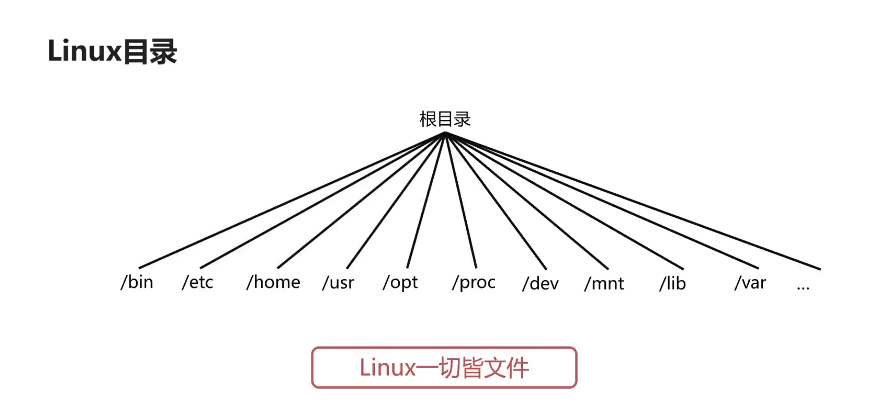

文件系统篇
1、操作系统的文件管理
1.1、文件的逻辑结构


1.2、辅存的存储空间分配
1.2.1、辅存的分配方式

连续分配
- 如果一个文件的存储需要一系列的扇区；此时就会连续的将这些连续扇区分配给某个文件；
- 优点是读取文件内容非常容易、速度很快；只需要顺序地读取磁盘的扇区即可；
- 缺点是对存储要求比较高，存储文件时要有满足容量的连续存储空间；

隐式链接分配
隐式分配的 下一个链接指向 被存放在当前盘块内！假设某个文件需要使用下述五个盘块：
2 -> 9 -> 7 -> 18 -> 16

由于隐式链接存储在盘块中，在分配文件时：
- 盘块
2中会有一块空间去记录下一个盘块的地址（9） - 盘块
9中会有一块空间去记录下一个盘块的地址（7） - 盘块
7中会有一块空间去记录下一个盘块的地址（18） - 盘块
18中会有一块空间去记录下一个盘块的地址（16）
随机访问的效率极其低下 ：不管访问哪一个盘块，都需要从第一个盘块开始：
- 隐式分配适合顺序访问，在顺序访问时只需要知道第一个盘块，即可顺序的查找其余盘块；
- 假如需要访问文件的第 18 盘块，由于只能从头部开始，先找到第 2 个盘块、第 9 个盘块、第 7 个盘块；最终找到第 18 盘块！
可靠性差：任何一个链接出问题，都将影响到整个文件！
基于 隐式链接分配 的缺点，提出了 显示链接分配 方式！
显式链接分配
显式链接分配：下一个盘块的位置没有记录在上一个盘块中，而是使用一个 FAT 表来指定！(参考 FAT 文件系统)

缺点：
- 不支持直接高效的存储，因为
FAT记录项非常多；磁盘越大，FAT记录项越大； 如果在FAT文件系统存储一个非常大的数据，需要检索FAT表找到很多空闲的盘块号； 所以FAT文件系统不支持直接高效的存储； - 检索时
FAT表占用较大的存储空间，因为对某个文件读取时需要将整个FAT加载到内存，然后在内存中检索FAT；
索引分配
- 把文件的所有盘块集中存储，存储盘块的位置称为索引；
当需要读取某个文件时，只需要将该文件的索引读取进内存即可；

- 上图中，索引分配使用一个额外的盘块
12去记录该文件被分配到的所有盘块； 12是该文件的索引，会指向2 -> 9 -> 7 -> 18 -> 16；
索引分配很好的解决了 FAT 方式遇到的问题：
- 每个文件拥有一个索引块，记录被分配的盘块信息；在索引某个文件时，只需将索引块加载到内存即可，不需要将整个表加载到内存；
- 索引分配方式支持直接访问盘块；在索引块中可以直接找到文件对应的盘块；
- 文件较大时，索引分配方式具有明显优势；
- 主流的文件系统（如 Ext 文件系统） 都是使用索引分配来 进行磁盘分配；
1.2.2、辅存的存储空间管理

在辅存中，一般使用位示图、或者空闲表（少用）的数据结构来管理存储空间！


1.3、目录管理
文件目录树使得任何一个文件或文件夹都有唯一的路径

2、Linux 文件基本操作
在 Linux 系统下，一切都是文件，进程也是一个文件！
2.1、Linux 目录

/// 进入根目录
MacBook $ cd /
/// 查看文件列表
MacBook:/ $ ls
Applications Volumes etc sbin
Library bin home tmp
System cores opt usr
Users dev private var
| 目录 | 描述 |
|---|---|
/bin |
存放二进制可执行文件 (ls、cat、mkdir等)，常用命令一般都在这里 |
/etc |
存放系统管理与配置文件 |
/home |
存放所有用户文件的根目录，是用户目录的基点；如用户 user 的主目录就是 /home/user |
/usr |
存放系统应用程序，如常见的 usr/local （本地系统管理员软件安装目录） |
/dev |
用于存放设备文件，如终端、键盘输入等 |
/opt |
额外安装的可选应用程序包所放置的位置 |
/var |
用于存放运行时需要改变数据的文件 |
/sbin |
存放二进制可执行文件，只有 /root 才能访问 |
/root |
超级用户（系统管理员）的主目录 |
/proc |
虚拟文件系统目录，是系统内存的映射！可直接访问这个目录来获取系统信息； |
/mnt |
系统管理员安装临时文件系统的安装点，系统提供这个目录是让用户临时挂载其它的文件系统 |
/boot |
存放用于系统引导时所使用的各种文件 |
/lib |
存放和文件系统中的程序运行所需要的共享库及内核模块 |
每一个文件或者文件夹，从根目录开始，都有一个唯一的路径来指向；
- 绝对路径：从根目录开始的路径；
- 相对路径：相对于当前的操作目录，它的文件位于哪一个目录；相对路径不固定，随着操作文件的路径变化而变化！
文件描述信息包含 文件标识符、文件类型、文件权限、文件长度、文件状态、索引节点 等信息。
2.2、Linux 文件常用操作
- 目录/文件的创建、删除、读取、写入
/// touch 创建一个文件
MacBook-Pro:Desktop $ touch 1.txt
/// 使用 vim 创建、编辑、查看一个文件
MacBook-Pro:Desktop $ vim 2.txt
/// 查看一个文件的内容
MacBook-Pro:Desktop $ cat 2.txt
Hello Word!
/// 删除一个文件
MacBook-Pro:Desktop $ rm 1.txt
/// mkdir 创建一个文件夹
MacBook-Pro:Desktop $ mkdir 1
/// 删除一个文件夹
MacBook-Pro:Desktop $ rm 1
rm: 1: is a directory (1 是一个文件夹，不能删除)
/// 使用参数 -r 表示递归的删除文件夹中的数据
MacBook-Pro:Desktop $ rm -r 1
2.3、Linux 文件类型
Linux 文件有 套接字文件、普通文件、目录文件、符号链接文件、设备文件、FIFO 文件等多种文件类型。

-开头表示文件d开头表示文件夹c开头表示字符设备文件b开头表示块符设备文件l开头表示链接文件
/// 分别创建一个文件、一个文件夹
MacBook-Pro:Desktop $ touch 1.txt
MacBook-Pro:Desktop $ mkdir 2
/// 使用 ls -al 查看文件的一些信息
MacBook-Pro:Desktop $ ls -al
total 24
-rw-r--r--@ 1 i7y staff 6148 8 16 09:59 .DS_Store
-rw-r--r-- 1 i7y staff 0 7 23 13:56 .localized
-rw-r--r-- 1 i7y staff 0 8 16 09:58 1.txt
drwxr-xr-x 2 i7y staff 64 8 16 09:59 2
/// -rw-r--r-- : 一个文件
/// drwxr-xr-x : 一个文件夹
MacBook-Pro:Desktop $ cd /
MacBook-Pro:/ $ ls
Applications Volumes etc sbin
Library bin home tmp
System cores opt usr
Users dev private var
MacBook-Pro:/ $ cd dev
MacBook-Pro:dev $ ls -al
total 9
dr-xr-xr-x 3 root wheel 4384 8 16 09:04 .
drwxr-xr-x 20 root wheel 640 1 1 2020 ..
crw-r--r-- 1 root wheel 10, 3 8 16 09:04 auditsessions
crw------- 1 root wheel 31, 0 8 16 09:05 autofs
brw-r----- 1 root operator 1, 6 8 16 09:04 disk1s4
lr-xr-xr-x 1 root wheel 0 8 16 09:04 stdout -> fd/1
/// crw : 一个字符设备文件
/// brw : 一个块符设备文件
/// lr : 链接文件
3、Linux 的文件系统
常见的文件系统有 FAT、 NTFS 、 EXT2/3/4 ！
FAT全称File Allocation Table，FAT 16与FAT 32是早期微软的 Dos/Windows 使用的文件系统； 主要使用一张表来保存盘块的信息（链接分配方式）！NTFS全称New Technology File System，是当今 Windows 系统常用的文件系统；NTFS对FAT进行了改进，取代了旧的文件系统！EXT(Extended File System) 可扩展文件系统；主要用于Linux的文件系统，不支持 Windows 系统；
一个 EXT 格式 U 盘不能被 Windows 系统读取数据；因此 U 盘多格式化为 NTFS 格式！
3.1、Ext 文件系统

Ext 文件系统使用索引分配方式分配辅存空间！可以将 Ext 文件系统看做是由一个 Boot Sector 和若干个 Block Group 组成：
Boot Sector启动扇区，安装开机管理程序Block Group块组，存储数据的实际位置；有多个块组
每个块组 Block Group 都由以下一些信息组成：
Inode bitmap:Inode的位示图，记录已分配和未分配的Inode；当一个文件系统初始化的时候，Inode的输入已经固定，此时可以使用位示图来记录；Inode table: 存放Inode的地方，每一个文件(目录)都有一个 索引节点Inode；Ext 文件系统管理外存的方式为索引分配的方式！Date Block: 存放文件内容的地方；每个Block都有一个唯一的编号，每一个文件的Block记录在文件的Inode上；Block bitmap:Block的位示图；功能与Inode bitmap类似，记录Date Block的使用情况；当需要对一个文件进行外存分配时，通过查询Block bitmap来分配相应的Date Block！SuperBlock：记录整个文件系统相关信息（Block、Inode使用情况，时间信息，控制信息等等）的地方；时间信息包括文件系统所挂载的时间、最后一次写入、最后一次读取、最后一次校验的时间！一般是 1024 个字节的大小！
每个文件或者文件夹都有一个 Inode，Inode 可以理解为是文件或文件夹的 身份证，存储着关键信息：如文件类型(目录文件、普通文件、套接字文件等)、文件权限、文件物理地址、文件长度、文件连接计数、文件存取时间（如最新修改文件的时间、创建文件的时间等）、索引的节点编号（每个文件的唯一标识符）、文件状态、访问计数（当前哪几个进程访问了该文件）、链接指针等等；
- 文件名不是存放在
Inode节点上的，而是存放在目录的Inode节点； - 列出目录文件时，无需家在文件的
Inode；列出目录文件的操作非常频繁，如果每次列出目录文件，都去加载所有文件的Inode，将会耗时！
/// 查看 EXT 文件系统
MacBook-Pro $ df -t
Filesystem 512-blocks Used Available Capacity iused ifree %iused Mounted on
/dev/disk1s5s1 976490576 29943648 596646728 5% 553781 4881899099 0% /
devfs 379 379 0 100% 656 0 100% /dev
/dev/disk1s4 976490576 2097192 596646728 1% 3 4882452877 0% /System/Volumes/VM
/dev/disk1s2 976490576 553472 596646728 1% 832 4882452048 0% /System/Volumes/Preboot
/dev/disk1s6 976490576 840 596646728 1% 18 4882452862 0% /System/Volumes/Update
/dev/disk1s1 976490576 345715896 596646728 37% 1923831 4880529049 0% /System/Volumes/Data
map auto_home 0 0 0 100% 0 0 100% /System/Volumes/Data/home
MacBook-Pro $ dumpe2fs /dev/disk1s4
-bash: dumpe2fs: command not found
4、操作系统的设备管理
4.1、广义的 IO 设备
对于计算机，输入输出设备有键盘、鼠标、触摸板等！
对 CPU 而言，凡是对 CPU 进行数据输入的都是输入设备；凡是对 CPU 进行数据输出的都是输出设备！
可以按照 使用特性 、 信息交换的单位 、 设备的共享属性 、 传输速率 等多个角度对广义的 IO 设备进行分类！

4.2、IO 设备的缓冲区
针对 CPU 与 IO 设备的传输速率不匹配的问题，前文提出了使用 缓存-主存、主存-辅存的存储层次来解决；除此之外，还可以使用 IO 设备的缓冲区来解决！
通过 IO 设备的缓冲区，可以减少 CPU 处理 IO 请求的频率，提高 CPU 与 IO 设备之间的并行性！

专用缓冲区只适用于特定的 IO 进程，当这样的 IO 进程比较多时，对内存的消耗会很大；因此，操作系统划出了可供多个进程使用的公共缓冲区，称为缓冲池！

- 进程与 IO 设备的交互，使用的不是进程专用的缓冲区，而是从缓冲池中取出一个缓冲区；
- 缓冲池中存在多个缓冲区，进程需要使用时从缓冲池取出某一个缓冲区使用，使用完之后再将缓冲区归还给缓冲池；
- 达到多个进程共同使用缓冲区、减小内存消耗的目的！
4.3、SPOOLing 技术
SPOOLing 技术是一种关于慢速字符设备如何与计算机主机交换信息的一种技术；可以使用该技术解决 CPU 与 IO 设备的传输速率不匹配的问题！
工作原理：
- SPOOLing 技术是一种虚拟设备技术，将一台低速的物理设备虚拟为高速独享设备；
- 使用该技术，操作系统在逻辑上为每一个进程都分配了一台独立的高速独享设备；

假设三个进程都需要使用打印机，由于打印机是一种读写速度很慢的设备:
- 多个进程都需要使用打印机，将会等待很久；
- 使用 SPOOLing 技术，不会直接将打印机分配给某个进程，而在共享设备（如共享磁盘）进行输出；
- SPOOLing 技术会在 共享磁盘 分配一个存储空间，进程的输出数据会以文件的形式保存在 SPOOLing 的存储空间上；
- 这些进程的数据输入输出会形成一个输出队列，然后由 SPOOLing 去控制打印机的进程、将输出队列中的文件依次打印出来！
- SPOOLing 系统并没有将打印机设备分配给任何一个进程，而是在输入输出的存储空间为进程分为一个存储区，并建立一张 IO 表，将逻辑设备虚拟为共享设备！
- 共享磁盘所用到的空间称为 输出井！
SPOOLing 技术将同步调用低速设备改为异步调用：如进程实际调用的不是打印机，而是将输出数据写入 输出井，再由 SPOOLing 技术将这些文件送到打印机打印，这样可以大大提升进程的工作效率！
SPOOLing 技术总结：
- 在输入、输出之间增加了排队转储环节（输入井、输出井）
- SPOOLing 技术负责输入井（输出井）与低速设备之间的调度；
- 在逻辑上，进程直接与高速设备交互，而不是与实际的物理设备交互，因此减少了进程的等待时间，提高了进程的工作效率；